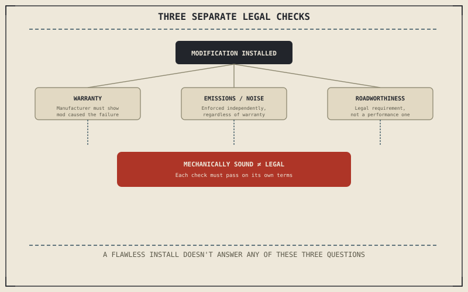

Chapters 13.2 through 13.6 covered technical trade-offs: performance, reliability, fit, aerodynamics, durability. This chapter covers a cost that isn't physical at all — legal and contractual consequences that apply across every category already discussed, regardless of how well the modification itself was actually executed.
Chapter 13.6 closed by pointing to exactly this: a different kind of consequence, beyond drag, weight, or reliability. This chapter covers it.
Warranty: The Manufacturer's Burden, in Theory and Practice
In many jurisdictions, a manufacturer generally can't void an entire vehicle's warranty simply because some modification exists somewhere on the bike; the legal standard typically requires showing that a specific modification actually caused the specific failure being claimed. In practice, though, dealers and manufacturers frequently deny claims more broadly than that standard technically allows, shifting the real burden onto the rider to dispute it. This is exactly where Chapter 13.2's re-tune records or Chapter 13.3's professional re-valve documentation stop being purely technical details and become evidence — proof a modification was installed correctly and isn't the actual cause of an unrelated failure.
Emissions and Noise Regulations
Chapter 2.14 already named catalytic converter removal as a modification frequently chased purely for sound, and in most jurisdictions that removal is separately illegal for road use regardless of what it does to warranty coverage — an emissions violation, enforced on its own terms. Noise limits, typically measured in decibels at a specified distance and RPM, are enforced independently again, which means Chapter 13.2's slip-on or full-system exhaust choice can be mechanically sound and still fail a roadside noise or emissions check entirely on its own.
A modification can be technically excellent by every standard the earlier chapters in this part described — correctly matched, professionally installed, fully documented — and still be illegal to ride on public roads, because legality and mechanical soundness are answering two entirely different questions.

A diagram showing warranty coverage, emissions and noise regulations, and roadworthiness inspection as three separate legal and contractual checks a modification must pass independently of its technical execution.
Roadworthiness and Inspection
Chapter 13.4's footpeg and Chapter 13.6's bodywork changes can each affect requirements that have nothing to do with how well the part actually performs: minimum ground clearance, mirror and light placement, or a fairing mandated by regulation in some jurisdictions. A modification can pass every technical standard this part has described — correctly matched, well-installed, mechanically sound — and still fail a roadworthiness inspection outright, because that inspection is checking against a legal requirement, not a performance one.
A Common Misconception, Cleared Up Early
It's a common assumption that "if it still runs fine, it's legal" — treating mechanical soundness as a reasonable stand-in for legal compliance. Every example in this chapter shows those as separate questions entirely: a flawlessly executed modification can still void a warranty claim in practice, fail an emissions or noise check, or fail a roadworthiness inspection, none of which reflects on how well the part itself was chosen or installed. Legality has to be checked on its own terms, not inferred from how well a modification works.
Where This Leads
Chapter 13.8 closes this part by returning modifications to the whole-system view this book keeps returning to, tying performance, comfort, identity, reliability, and legality back together.
Key Concepts to Remember
- A warranty generally can't be voided by a modification's mere existence, but disputing a denial in practice often requires the rider to prove it, making documentation valuable.
- Emissions and noise regulations are enforced independently of warranty status, and a mechanically sound modification can still fail either one.
- A roadworthiness inspection checks legal requirements, not performance, and a well-executed modification can still fail it.
Cross-References
| ← Ch. 2.14 | Named catalytic converter removal as a common sound-driven modification; this chapter treats that same removal as separately illegal in most jurisdictions. |
| ← Ch. 13.2 | Covered the exhaust re-tune requirement; this chapter treats that documentation as evidence useful in a warranty dispute. |
| ← Ch. 13.4 | Covered footpeg modifications affecting lean angle; this chapter adds that the same change can affect legally required ground clearance. |
| → Ch. 13.8 | Closes Part XIII by returning modifications to the whole-system view this book keeps returning to. |